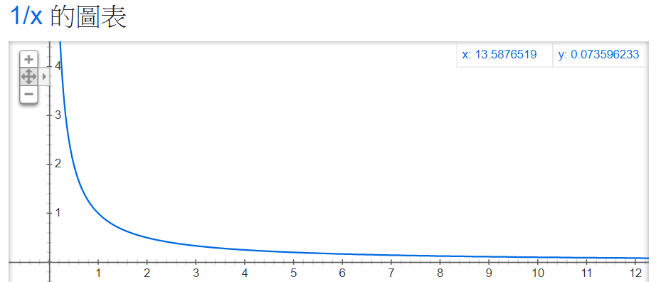

Gabriel's Horn
相傳當世界末日來臨之際，耶穌會回到人間進行最後的審判，將死者復生並進行裁決，以生前的作為來決定永生者或是地獄者。而加百列，作為傳遞神的訊息的天使長，在審判日那天便會吹者加百列的號角，恭迎著耶穌的到來。
今天，我們不討論世界末日跟審判日是什麼，我們來討論這位又被稱為熾天使別西卜的加百列所使用的號角。加百列在審判日所吹的號角其形狀十分的特殊，就是一端十分細，直到開口出成一個扁平狀的結構，此形狀又可以稱做是托里拆利小號（Torricelli's Trumpet）。
此結構可以由數學函數
\[y=\frac{1}{x}\ (x>1)\]
以x軸為旋轉軸，繞軸旋轉而得。

而數學家們，發現了一件十分有趣的事情：他們發現這個向x軸方向無限延伸的喇叭結構其體積是個定值(即體積收斂)，然而其表面積卻是個無限值。這樣聽起來確實很怪，怎麼體積是個有現值，表面積卻可以無限的不斷放大?
為了瞭解這個問題，現在我們用數學的方法來定量的計算一下加百列號角的體積跟表面積分別是多少吧!
首先我們先計算體積好了，計算的方法很簡單，就是把這樣特殊的錐體切成薄片，並分別計算每個薄片的體積後再用積分將所有的薄片加總
\[dV=\pi r{\left(x\right)}^2dx=\pi {\left(\frac{1}{x}\right)}^2dx\]
因此將體積的範圍從1積分到無限大
\[\int^{\infty }_1{\pi {\left(\frac{1}{x}\right)}^2dx}={\left.-\pi \frac{1}{x}\right\rceil }^{\infty }_1=-\pi \left(\frac{1}{\infty }-\frac{1}{1}\right)=\pi \]
最後我們得到加百列號角的體積剛好就是pi
接下來我們來計算這個號角的表面積，一樣的方法是將錐體切成薄片，並計算每個薄片的表面積後再利用積分加總
\[dA=2\pi r\left(x\right)\sqrt{dx^2+dy^2}=2\pi \frac{1}{x}\sqrt{dx^2+dy^2}=2\pi \frac{1}{x}\sqrt{1+{\left(\frac{dy}{dx}\right)}^2}dx\]
因此將表面積的範圍從1積分到無限大
\[\int^{\mathrm{\infty }}_{\mathrm{1}}{2\pi \frac{1}{x}\sqrt{1+{\left(\frac{dy}{dx}\right)}^2}dx}\]
然而這裡我們用一點比較tricky的數學技巧(定積分的比較定理)，因為括號內的變數為1加上平方項，為一個恆正的數，因此我們有以下的關係
\[\int^{\infty }_1{2\pi \frac{1}{x}\sqrt{1+{\left(\frac{dy}{dx}\right)}^2}dx}>\int^{\infty }_1{2\pi \frac{1}{x}\sqrt{1}dx}\]
接者我們計算等式右邊的積分項
\[\int^{\infty }_1{2\pi \frac{1}{x}dx}={\left.2\pi {ln \left(x\right)\ }\right|}^{\infty }_1=2\pi \left({ln \left(\infty \right)\ }-{ln \left(1\right)\ }\right)→\infty \]
會發現右邊的積分值是發散的，因此由上面的關係是我們可以有
\[\int^{\infty }_1{2\pi \frac{1}{x}\sqrt{1+{\left(\frac{dy}{dx}\right)}^2}dx}→\infty \]
加百列號角的表面積為無限大的結果
以上我們用微積分嚴謹的數學工具來計算加百列號角的體積跟表面積大小，可以得到加百列號角的體積為pi、表面積為無限大的結果。這樣的結果也讓數學家們十分震驚、是個極度違反直覺的結果，怎麼會有有限體積、無限表面積的東西呢?
為了讓讀者們能更體會這樣的結果我提供一個有趣的小猜想實驗，假設有一塊球體的黏土，用手指搓揉其中一個小角落，圓形的球體就會開始變成錐體，而在固定的體積下，其表面積會一直不段的增加。若是可以無限無限的繼續搓揉這個黏土，則其表面積是不是就會變成無限大呢?
儘管我們可以這樣的去理解這樣的現象，加百列號角的數學計算結果衍伸出了十分著名的悖論，被稱作油漆悖論(The Painter Paradox)。
\textbf{\textit{加百列號角可以用有限的油漆裝滿，卻不能用有限的油漆塗滿外表}}
\textbf{\textit{}}
多麼有哲學意涵的一句話呀!你可以裝滿他、但是你卻不能塗滿他? 聽起來真是十分的荒謬呢!
最後我提供了關於解釋這個悖論簡單的概念和分析
首先在比較這兩種東西就是件不合理的事情，例如今天有兩個人，其中一個人身高170cm、另外一個人體重85kg，請問哪個人比較大? 光聽這句話就會覺得很奇怪了，因為在這個問題當中拿了兩個不同因次的物理量(或是你說單位也可)在做比較，這是不合理且沒有意義的問題；而油漆悖論的問題也是在拿兩個不同物理量的東西在做比較，一個是體積(長度立方)、跟表面積(長度平方)兩種不同因次的物理量是無法比較的，只不過是一般人容易被數字的大小給迷惑，而忘記兩個是無法同時比較的不同因次物理量。
此外，若是想要進一步的了解為何體積收斂、表面積卻無法收斂的問題，我這裡也提供了簡單的概念，首先回想在搓黏土的過程中，體積是以(dx)$\mathrm{\wedge}$3在變化、而表面積是以(dx)$\mathrm{\wedge}$2在變化，它們之間的比值在dx趨近於無限小時則得到無限大的結果。因此表面積就會變得無限大囉。(此段敘述為一個概念性的想法、無嚴謹的數學概念喔!)
\[\frac{{\left(dx\right)}^2}{{\left(dx\right)}^3}=\frac{1}{dx}→\infty \]
最後我們回到油漆悖論的命題
\textbf{加百列號角可以用有限的油漆裝滿，卻不能用有限的油漆塗滿外表}
這句富含神話且具有哲學意涵的問題，但是我們用數學就能理解他，你搞懂了嗎?